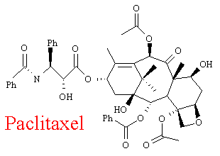
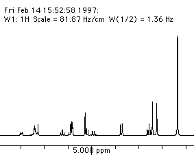

Taxol® and Related Anticancer Drugs
Physical Properties
[This needs the Chime
plugin. The 3D molecule is active;
left click on it, to move it around and right click to trigger
a menu]
Paclitaxel - Synonyms: Taxol; Taxal; Taxol A; 7,11-Methano-5H-cyclodeca[3,4]benz[1,2-b]oxete, benzenepropanoic acid deriv.; TAX; 5-beta,20-epoxy-1,2-alpha,4,7-beta,10-beta, 13-alpha-hexahydroxy-tax-11-en-9-one 4,10-diacetate 2-benzoate 13-ester with (2R,3S)-N-benzoyl-3-phenyl-isoserine (3)
Taxol (C47H51NO14) is a white solid, of Mr = 853.92. It melts between 213-216 oC and is soluble in ethanol but not in water. It is highly toxic - showing signs of being both carcinogenic and tetrogenic, yet is an extremely important anticancer drug. Taxol is sensitive to both light and moisture and most be kept tightly sealed. Cost is about $140 per 25mg.(4)
Structure

The chemical structure of Paclitaxel (Taxol) is made up of two main parts. The largest part, is called Baccatin III and consists of a carbon framework made up of four linked rings, (4,6,6,8). This framework is highly oxygenated and has a large number of chiral centres. The other half of the molecule is the large side-chain (on the left in the above diagram). This carries a pair of benzene rings and more importantly, an amide group, essential for the molecule's anticancer activity.
Pharmaceutical Information

Manufacturer
Bristol-Myers-Squibb
Supplier
Investigational use; Division of Cancer Treatment
- National Cancer Institute
Commercial use: Bristol-Myers-Squibb
Formulation
Supplied as concentrated solution of 6 mg/ml in 5 ml vials (30 mg). Solvent (vehicle) is 50% polyoxylated castor oil and 50% dehydrated alcohol. Vials must be diluted before use to 0.3 - 1.2 mg/ml with a solution of dextrose 5% and NaCl 0.9% in water.
Storage
Vials must be stored at 2-8oC and protected from light. Shelf life is unknown but made up solution is stable for at least 27 hours at room temperature.
Administrative information
Administered as a 24 hour intravenous drip. Use of polyvinyl chloride (PVC) bags and tubes must be avoided due to leaching of plasticisers by the oil/alcohol vehicle.(10)
 Next
Page: Biological
Properties - how does Taxol work?
Next
Page: Biological
Properties - how does Taxol work?